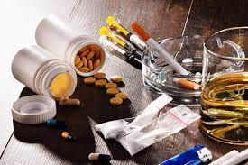

Teenager and Kids
Everything about teen is very complicated. Teenager are suffering cause of peer pressure, and some are drinking alcohol at a very young age cause they think that they are grown adults. Many teenager put pressure on their friends to have sexual intercourse
Symptoms of Peer Pressure
- Low moods, tearfulness or feeling of hopefulness.
- Loss of appetite or over-eating.
- Trouble falling asleep, staying asleep or waking early.
- Sudden changes in behavior, often for no obvious reason.
- Withdrawal from activities your child used to like.
- Reluctance to go to school.
Substance abuse is the use of illegal drugs. In some cases, criminal or anti-social behavior occurs when the person is under the influence of drugs, and long-term personality change I an individual and Peer Pressure can also lead to substances abuse. One thing that teenager do is that they drink alcohol under age to show to they friends that they can do it without their parents noticing.

Common substances of abuse include:
- Alcohol
- Cocaine
- Tobacco
- Marijuana
Teenager should stop hanging around with their friends who smoke and who drink because it can cause a lot of damage to them so please stop. The only reason why Kids smoke and drink it's because of their older brothers or sister, kids like to copy what their older siblings.
Contact this number Cellphone: 0800456789
Contact this Email: helpservice@gmail.com
To help someone in your family.
introductionRisks and Solutions
Risks
Here are 7 risks of substance abuse
- 1. Physical Health Problems Damage to organs such as the liver, heart, brain, and lungs Increased risk of diseases like HIV/AIDS and hepatitis (especially with injection drug use)
- 2. Mental Health Issues Can trigger or worsen conditions like depression, anxiety, psychosis, and paranoia Increased risk of suicide and self-harm
- 3. Addiction and Dependence Tolerance and withdrawal symptoms develop Loss of control over usage despite negative consequences
- 4. Relationship Problems Strain or breakdown in family, romantic, and social relationships Increased risk of domestic violence or neglect
- 5. Legal and Financial Consequences Arrests for possession, DUI, or other drug-related crimes Job loss, financial instability, and debt due to spending on substances
- 6. Poor Academic or Job Performance Reduced concentration, absenteeism, and low productivity Dropping out of school or getting fired from work
- 7. Risky Behaviors and Accidents *Impaired judgment leading to unsafe sex, driving under the influence, or violent behavior Increased risk of injuries, overdoses, or death
Solutions
Here are 4 solutions of substance abuse
- Education and Awareness-teaching young adults the dangers and consequences of substance abuse.
- Strong family support-having a family that supports you is great and will help you know things and will guiding, encouraging and motivating you.
- Peer Coaches- people who will help you stay away from any items that include any substance (e.g. drugs, and alcohol)
- Going to church- all people need to go to church for them to Understand themselves and what they're responsibilities are.
Videos
Images good/bad
Good
.jpg)
Bad
